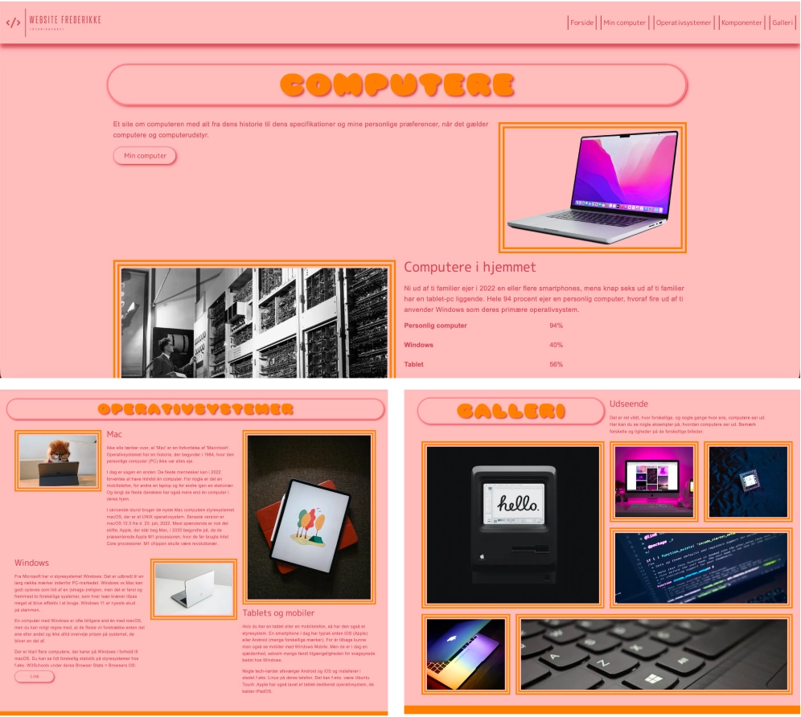
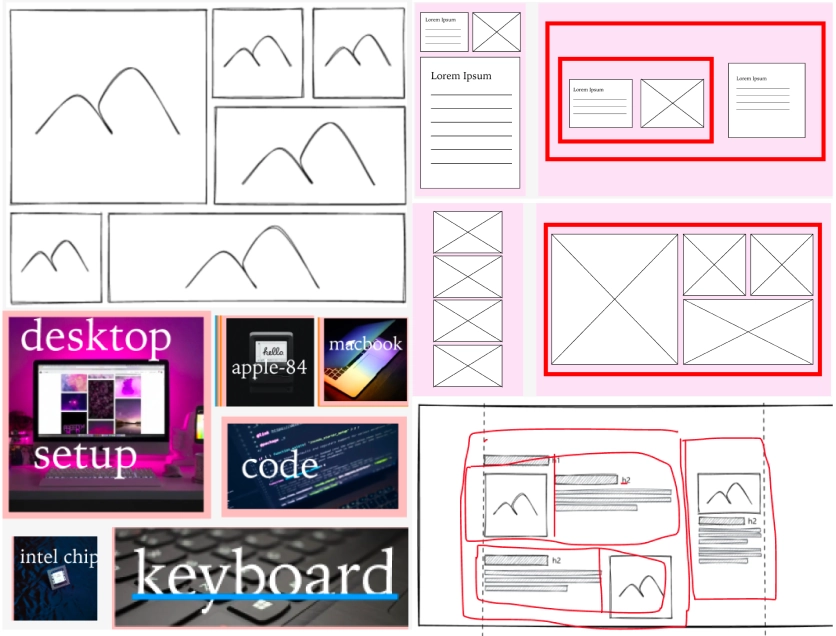

GRUNDLÆGGENDE WEB
LØSNING
LØSNING
Opgaven i Tema 2 var studiestartsprøven, hvor jeg individuelt skulle udvikle et responsivt website ud fra udleveret indhold og krav.
LÆS MEREFOKUS
Løsningen blev en færdig hjemmeside opbygget i HTML og CSS med fokus på struktur, læsbarhed og brugervenlighed.
HTML OG CSS
Jeg arbejdede med semantisk HTML, simpel navigation og et overskueligt layout, der fungerer på både mobil og desktop. Designet er holdt enkelt og struktureret, så indholdet er nemt at aflæse og finde rundt i.
VIS MINDREPROCES
PROCES
Processen fulgte den rækkefølge, vi arbejdede med i undervisningen. Først fik jeg en grundlæggende introduktion til HTML og CSS, hvorefter jeg arbejdede med wireframes med fokus på mobilvisning.
LÆS MEREDESIGNPROCES
Derefter lavede jeg design og layout i Figma, hvor farver, typografi og struktur blev fastlagt. På baggrund af dette begyndte jeg at kode websitet i VS Code og arbejdede løbende med layout, responsivitet og justeringer i browseren.
VIS MINDRELÆRING

LÆRING
Tema 2 har givet mig et solidt fundament inden for grundlæggende webudvikling. Jeg har lært, hvordan HTML bruges til struktur, og hvordan CSS bruges til styling og layout.
LÆS MERERESPONSIVT DESIGN
Jeg har fået en bedre forståelse for responsivt design, mobile first-tilgang og brugen af Flexbox og Grid. Derudover har jeg lært, hvor vigtig struktur, visuel hierarki og typografi er for en god brugeroplevelse.
SAMMENHÆNG
Temaet har gjort mig mere sikker i at arbejde med både design og kode og givet mig en klar forståelse for, hvordan de to hænger sammen i praksis.
VIS MINDRE